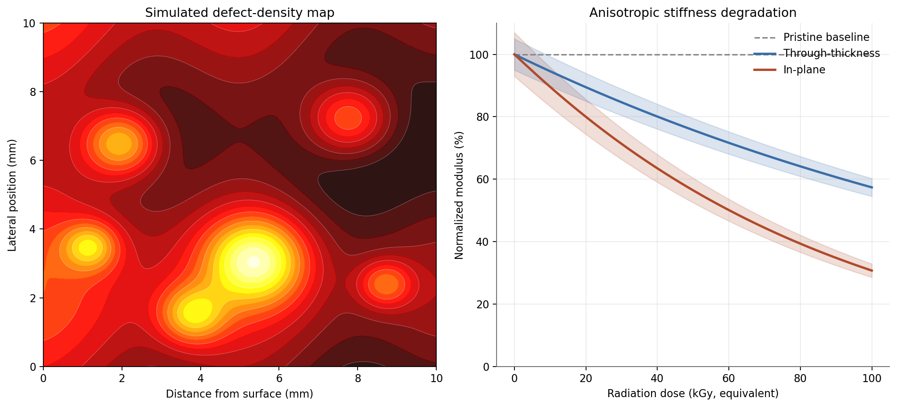

Through the U.S. Department of Defense, I conducted materials-design research at the Air Force Research Laboratory (AFRL) on Kirtland Air Force Base in Albuquerque, New Mexico. My focus was extreme-environment structural materials for space-vehicle and directed-energy applications. As a brief summary of my research:
- I developed first-principles degradation models for cyanate-ester and epoxy polymer-matrix composites used in deployable space structures, in collaboration with the Deployable Structures Laboratory (DeSel) at Kirtland. I ran DFT (VASP) and reactive-MD (ReaxFF in LAMMPS) on chain-scission and crosslink-formation events under simulated proton and UV exposure, then fit a SMILES-conditioned variational autoencoder over candidate polymer architectures to enable gradient-based inverse design against radiation-stability targets.
- I characterized material–laser interaction profiles for the AFRL Directed Energy Directorate, running coupled thermal-mechanical FEM (Abaqus) and time-dependent DFT on heat-resistant shield and optical-window candidates under high-power laser and microwave exposure. I used a graph neural network surrogate (SchNet-style) trained on the FEM outputs to steer the next simulation batch, cutting the number of expensive full-physics runs roughly in half relative to a Latin-hypercube baseline.
- For the AFRL Materials & Manufacturing Directorate testbeds, I parametrized force fields for high-temperature Ni-base alloys and SiC ceramic components via message-passing neural networks (NequIP architecture) trained against ab initio reference data. I validated the predicted thermal-expansion coefficients and creep-strain rates against experimental measurements from the co-located testing facility to within 10% across the 800–1400 K range, qualifying the surrogate for downstream design-of-experiments use.
